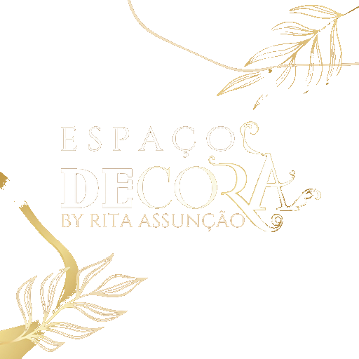
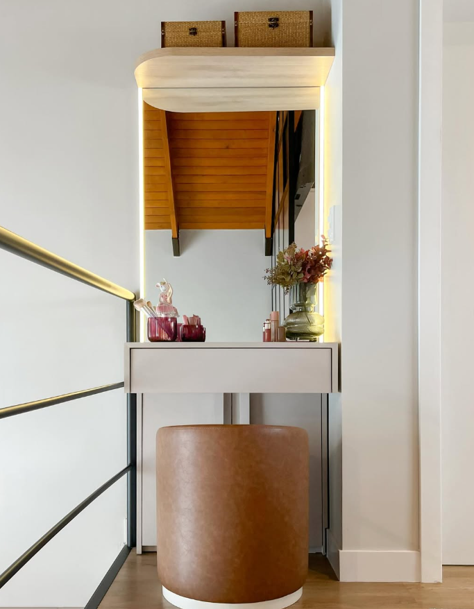
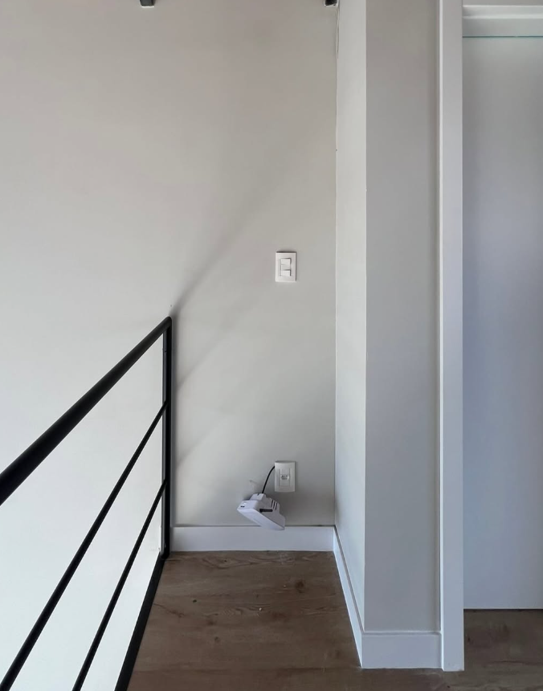
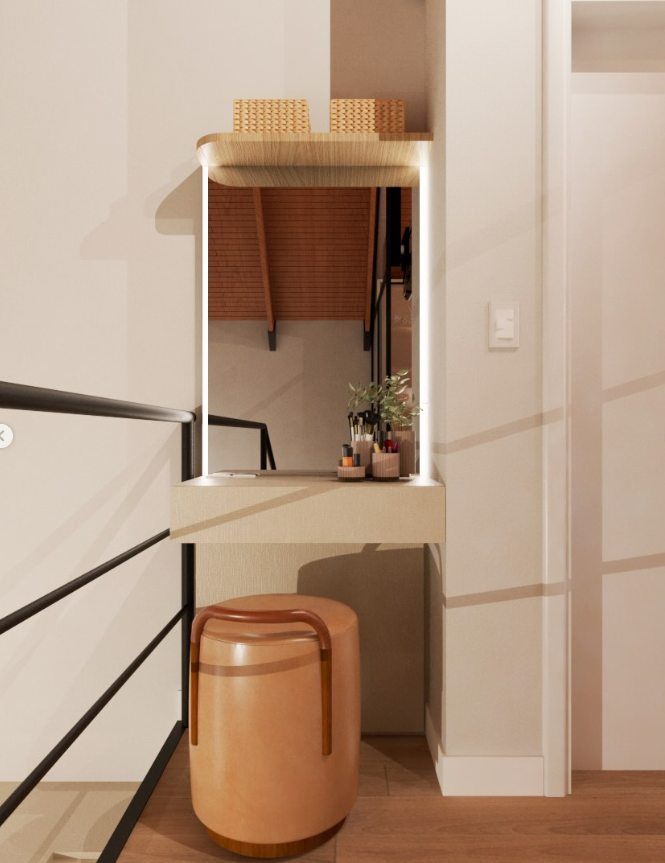
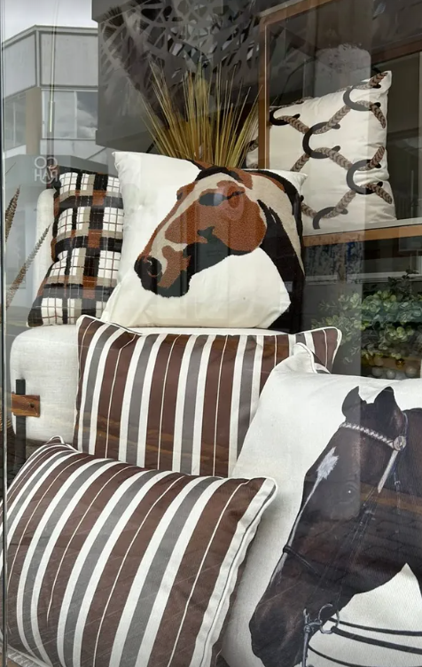
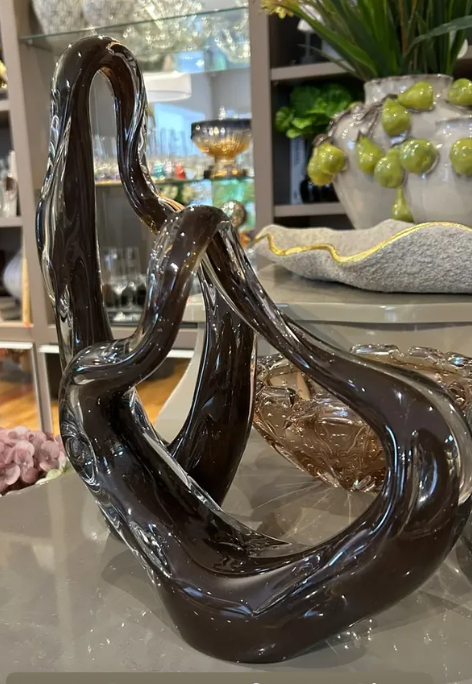
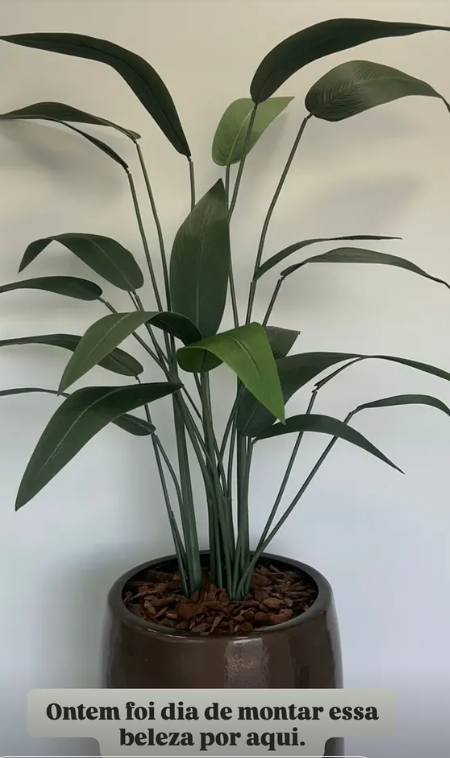
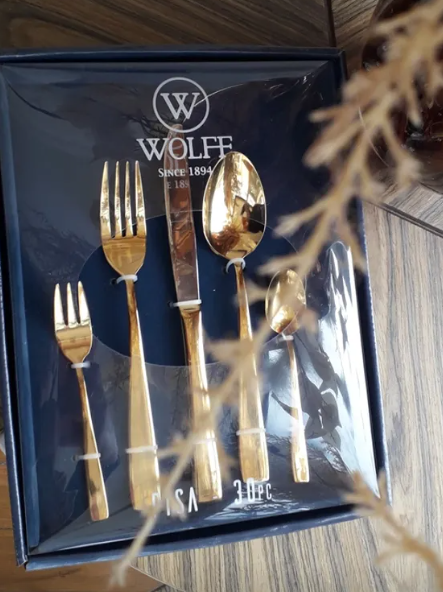
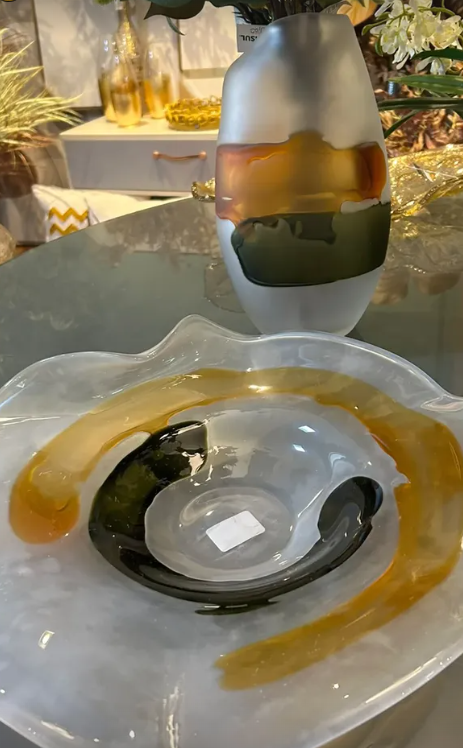

Lages · Santa Catarina

A essência
Cada ambiente conta uma história. Transformo espaços em Lages com peças que têm alma — da decoração ao aroma, do detalhe ao acabamento. O Espaço Decora nasceu do olhar de quem acredita que casa bonita é casa que abraça.
[X anos de experiência]
— Rita Assunção
Prova em imagens
Mesmo cantinho, mesma casa — arraste para ver a transformação.



Em movimento
Toque ou passe o mouse sobre um vídeo para ouvir o som.
Em detalhe




